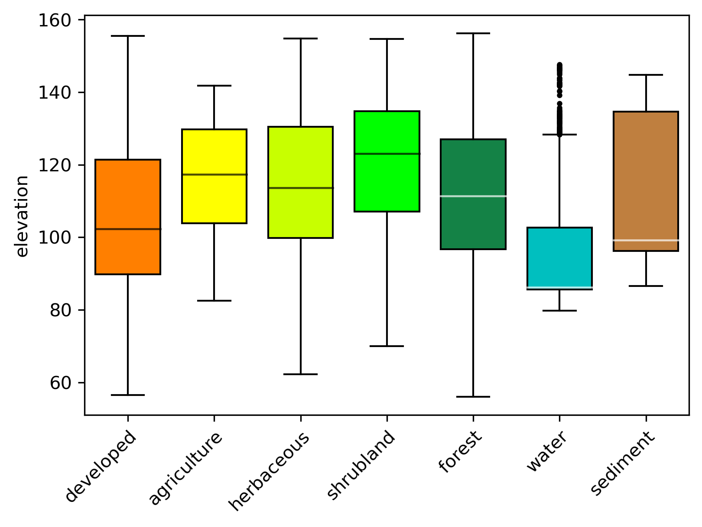

g.extension extension=r.boxplot
r.boxplot -oc input=elevation zones=landclass96 output=r.boxplot.pngMaking plots with GRASS GIS
GRASS GIS
Plotting
line
histogram
boxplot
Basic
In previous tutorials we saw examples of how to convert GRASS GIS raster and vector maps into Python and R objects to perform data analysis and visualizations. There are some GRASS GIS tools, mostly based in the well known matplotlib Python library, that allow us to create plots for data visualization without the need to explicitly convert GRASS data. Here are these plotting tools for raster, vector and time series data within GRASS GIS:
| Raster | Vector | Time series |
|---|---|---|
| r.boxplot | v.scatterplot | g.gui.tplot |
| r.series.boxplot | v.boxplot | t.rast.boxplot |
| v.histogram | t.rast.line |
In this tutorial, we’ll demonstrate their use with maps from the North Carolina full dataset. We’ll also use a special mapset containing MODIS LST data products to exemplify tools’ usage with time series data. While these tools can be invoked from the GUI menu or Tools tab, we will show how the GRASS commands look like so you can run them from the terminal or the Console tab of the GUI. We also show the command wrapping for Python scripts using the grass.script package. You can test them in the Python tab. The use of commands facilitates reproducibility and quick testing of small changes and tweaks.
Raster plotting tools
r.boxplot
r.boxplot is a GRASS GIS addon that allows us to make boxplots with our GRASS raster maps. It also allows to use a zonal map like a land cover classification to draw boxplots of a certain variable per classes, i.e., land cover classes. The tool then contemplates some nice features like the possibility to plot per class boxplots of the same color that the class is assigned in the zonal map or create a point vector map with the locations of the outliers, among other tweaks. Let’s see an example using a zonal map, plotting outliers and coloring boxes with the colors of the zonal map classes:
gs.run_command("g.extension", extension="r.boxplot")
gs.run_command("r.boxplot",
input="elevation",
zones="landclass96",
raster_statistics="median,IQR",
output="r.boxplot.png",
flags="oc")
r.series.boxplot
r.series.boxplot draws boxplots of a series of input raster maps that might represent different times, spectral bands in satellite imagery or other kind of variation. If users are interested in e.g., ploting the spectral signature of different land cover classes, they can alternatively set masks and recreate the boxplot series. Let’s see an example for developed and forested classes.
# install the extension
g.extension extension=r.series.boxplot
# add landsat mapset to the list of accessible mapsets
g.mapsets mapset=landsat operation=add
# list of maps and labels
bands=`g.list type=raster pattern="lsat7_2000*" exclude="*6*,*8*" sep=comma`
labels="band1,band2,band3,band4,band5,band7"
r.mask raster=landclass96 maskcats=1
r.series.boxplot map=$bands bxcolor=grey text_labels=$labels output=r.series.boxplot_developed.png
r.mask -r
r.mask raster=landclass96 maskcats=5
r.series.boxplot map=$bands bxcolor=grey \
text_labels=$labels output=r.series.boxplot_forest.pnggs.run_command("g.extension", extension="r.series.boxplot")
gs.run_command("g.mapsets", mapset="landsat", operation="add")
bands = gs.list_grouped(type="raster", pattern="lsat7_2000*", exclude="*6*,*8*")["landsat"]
labels = ["band1", "band2", "band3", "band4", "band5", "band7"]
gs.run_command("r.mask", raster="landclass96", maskcats="1")
gs.run_command("r.series.boxplot",
map=bands,
bxcolor="grey",
text_labels=labels,
output="r.series.boxplot_developed.png")
gs.run_command("r.mask", flags="r")
gs.run_command("r.mask", raster="landclass96", maskcats="5")
gs.run_command("r.series.boxplot",
map=bands,
bxcolor="grey",
text_labels=labels,
output="r.series.boxplot_forested.png")

Vector plotting tools
v.boxplot
v.boxplot draws the boxplot of values in a vector map attribute column. It also provides an option to group by categories in a second attribute column.
g.extension extension=v.histogram
v.boxplot -o -r map=bridges column=WIDTH group_by=YEAR_BUILT where="YEAR_BUILT < '1920'" order=ascending plot_output=boxplot_bridges_width_per_year.pnggs.run_command("g.extension", extension="v.histogram")
gs.run_command("v.boxplot",
map="bridges",
column="WIDTH",
group_by="YEAR_BUILT",
where="YEAR_BUILT < '1920'",
order="ascending",
plot_output="boxplot_bridges_width_per_year.png",
flags="or")
v.scatterplot
v.scatterplot creates a scatterplot with the values of two attribute columns from a vector map. It provides many arguments to control different plot features and it exposes some nice matplotlib functionality to do bining, add trend lines and confidence ellipses. While there’s r.scatterplot for raster data, it does not create a plot but a vector map. Users can, however, sample raster maps with a vector and then create scatterplots from the sampled data.
g.extension extension=v.scatterplot
v.scatterplot map=bridges x=YEAR_BUILT y=WIDTH trendline=polynomial degree=1 line_color=red type=density bins=10,10 file_name=scatterplot_bridges_width_vs_year.pnggs.run_command("g.extension", extension="v.scatterplot")
gs.run_command("v.scatterplot",
map="bridges",
x="YEAR_BUILT",
y="WIDTH",
trendline="polynomial",
degree=1,
line_color="red",
type="density",
bins="10,10",
file_name="scatterplot_bridges_width_vs_year.png")
v.histogram
v.histogram draws a histogram of the values in a vector map attribute column. The tool provides basic options to select values according to a condition and set the number of bins.
g.extension extension=v.histogram
v.histogram map=bridges column=WIDTH where="YEAR_BUILT < '1940'" plot_output=histogram_bridges_width.pnggs.run_command("g.extension", extension="v.histogram")
gs.run_command("v.histogram",
map="bridges",
column="WIDTH",
where="YEAR_BUILT < '1940'",
plot_output="histogram_bridges_width.png")Time series plotting tools
g.gui.tplot
g.gui.tplot is part of GRASS GIS core distribution and it allows to plot the values of raster and vector time series. Users can pass coordinate pairs for the case of raster time series and ids plus attribute column in the case of vector time series. The module also supports to display the trend line based on a linear regression and the R-squared value, visualize pop-up annotations, export the time series values to a text file, among other. Let’s see an example for the MODIS LSD DAY monthly raster time series.
g.region -p raster=MOD11B3.A2015001.h11v05.single_LST_Day_6km
g.gui.tplot -l strds=LST_Day_monthly coordinates=413831,196000 xlabel="Time" ylabel="LST (K*50)" output=LST_plot.png size=1000,800gs.read_command("g.region",
raster="MOD11B3.A2015001.h11v05.single_LST_Day_6km")
gs.run_command("g.gui.tplot",
strds="LST_Day_monthly",
coordinates="413831,196000",
xlabel="Time",
ylabel="LST (K*50)",
output="LST_plot.png",
size="1000,800",
flags="l")
t.rast.boxplot
t.rast.boxplot draws boxplots from raster maps in a space-time raster dataset, hence the x axis is determined by the STRDS temporal granularity, i.e., day, week, month, etc. Let’s see an example for plotting monthly LST within the state of North Carolina.
g.extension extension=t.rast.boxplot
g.region -p vector=boundary_county align=MOD11B3.A2015001.h11v05.single_LST_Day_6km
r.mask vector=boundary_county
t.rast.boxplot -o input=LST_Day_monthly dpi=300 rotate_labels=90 font_size=11 date_format="%Y-%m" bx_width=0.7 bx_color=195:194:194:255 flier_color=77:77:77:255gs.run_command("g.extension", extension="t.rast.boxplot")
gs.read_command("g.region", vector="boundary_county", align="MOD11B3.A2015001.h11v05.single_LST_Day_6km")
gs.run_command("r.mask", vector="boundary_county")
gs.run_command("t.rast.boxplot",
input="LST_Day_monthly",
dpi="300",
rotate_labels=90,
font_size=11,
date_format="%Y-%m",
bx_width=0.7,
bx_color="195:194:194:255",
flier_color="77:77:77:255",
flags="o")
If users would like to compare boxplot time series representing different areas, they could alternatively set masks for their areas of interest and then create the respective boxplot time series.
r.mask vector=geology where="GEO_NAME LIKE '%Zat%'"
t.rast.boxplot -o input=LST_Day_monthly dpi=300 rotate_labels=90 font_size=11 date_format="%Y-%m" bx_width=0.7 bx_color=195:194:194:255 flier_color=77:77:77:255
r.mask -r
r.mask vector=geology where="GEO_NAME LIKE '%Qp%'"
t.rast.boxplot -o input=LST_Day_monthly dpi=300 rotate_labels=90 font_size=11 date_format="%Y-%m" bx_width=0.7 bx_color=195:194:194:255 flier_color=77:77:77:255gs.run_command("r.mask", vector="geology", where="GEO_NAME LIKE '%Zat%'")
gs.run_command("t.rast.boxplot",
input="LST_Day_monthly",
dpi=300,
rotate_labels=90,
font_size=11,
date_format="%Y-%m",
bx_width=0.7,
bx_color="195:194:194:255",
flier_color="77:77:77:255",
flags="o")
gs.run_command("r.mask", flags="r")
gs.run_command("r.mask", vector="geology", where="GEO_NAME LIKE '%Qp%'")
gs.run_command("t.rast.boxplot",
input="LST_Day_monthly",
dpi=300,
rotate_labels=90,
font_size=11,
date_format="%Y-%m",
bx_width=0.7,
bx_color="195:194:194:255",
flier_color="77:77:77:255",
flags="o")t.rast.line
t.rast.line draws line plots from raster maps in a space-time raster dataset and also allows to pass a zonal map to compare average temporal changes of different areas of interest in the same plot.
g.extension extension=t.rast.line
t.rast.line input=LST_Day_monthly zones=boundary_county_500m y_label="LST (K*50)" date_format=%Y-%mgs.run_command("g.extension", extension="t.rast.line")
gs.run_command("t.rast.line",
input="LST_Day_monthly",
zones="boundary_county_500m",
y_label="LST (K*50)",
date_format="%Y-%m")